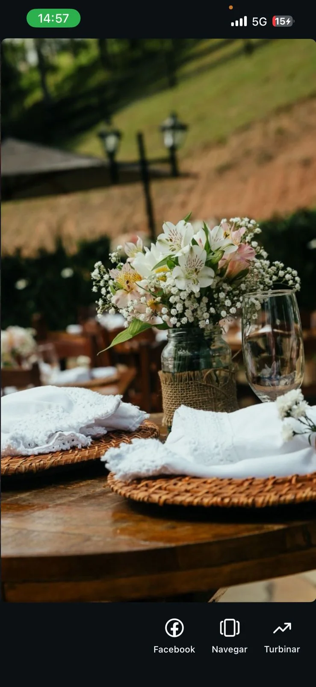

O Espaço
Natureza, madeira e liberdade para criar.
Ambientes que mudam de atmosfera conforme o tipo de evento — do campo aberto ao espaço rústico, da piscina às áreas de recepção.

Essência do lugar
Um espaço com identidade própria.
A proposta visual do Sítio Salvador nasce da mistura entre vegetação, madeira, texturas naturais e espaços abertos. Essa combinação permite montar eventos românticos, familiares, descontraídos ou corporativos sem perder a personalidade do lugar.
- Área verde para cerimônias e encontros ao ar livre.
- Ambientes cobertos com linguagem rústica e acolhedora.
- Lago, piscina e paisagismo como parte do cenário.
- Espaços que recebem diferentes estilos de decoração.
Ambientes Campo
Campo Piscina
Piscina Salão rústico
Salão rústico ExperiênciasPaisagem
ExperiênciasPaisagem
Cada canto abre uma nova possibilidade.
CampoPiscinaSalão rústico
RecepçãoExperiênciasPaisagem
Venha imaginar seu evento aqui.
Uma visita ao espaço é a melhor forma de entender o ritmo, os cenários e as possibilidades.
Agendar uma conversa →